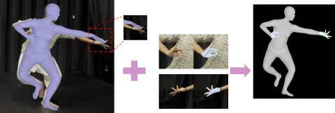
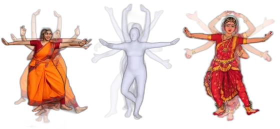
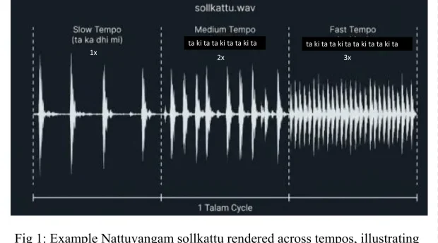
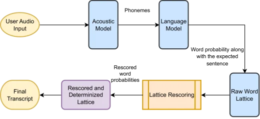
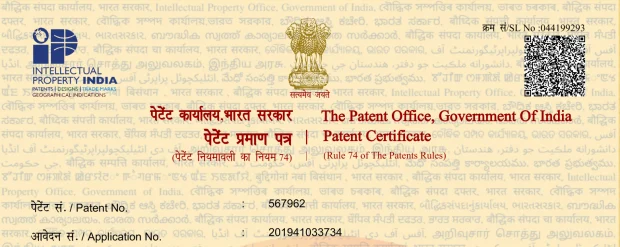
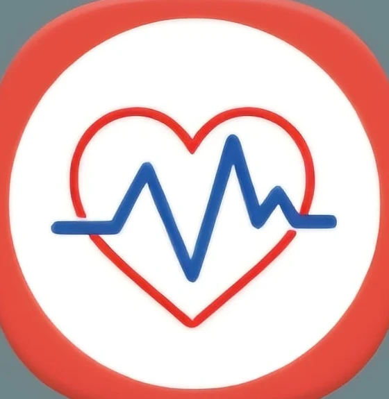

Research
My research is about fine-grained 3D human motion: the small differences in pose and timing that make movement expressive, and that current models still miss, especially for movement as intricate as classical dance. I study how such motion can be represented so its structure can be learned, how it can be generated from signals like audio, and how to tell whether generated motion is faithful in both space and time. A consistent thread is doing this from data that is scarce and culturally specific. This grew out of earlier work on using context in speech recognition and on video understanding, where I first became interested in how one modality can ground another.
News
- 2026Serving as a reviewer for NeurIPS 2026 (Creative AI track) and 3DV 2027. new
- 2026Selected for the Machine Learning Summer School (MLSS) 2026 in New York City (Columbia University, with Bloomberg), one of ~200 PhD researchers worldwide.
- 2025“Low-Resource Rhythm Learning of South Asian Beat Structures” published at the AAAI 2026 Workshop on Emerging AI Technologies for Music; its abstract was first accepted at the NeurIPS 2025 Women in Machine Learning Workshop.
- 2025India patent 567962 granted for “System and Method for Image Analysis and Summarization” (details).
- 2024Started my PhD in Computer Science at the University at Buffalo.
- 2024Won the Dean’s Choice Award for Best Poster at the Purdue Research Symposium.
- 2024Completed my MS in Computer Science at Purdue University.
Experience & Education
Publications & Preprints
-

-

-

-

Patent & Entrepreneurial Venture
Undergraduate work funded by the NewGen-IEDC cell of the Department of Science & Technology, Government of India, at B. N. M. Institute of Technology.
-

-

Awards
- 2026 MLSS NYC 2026 Selected, ~200 PhD researchers worldwide · Columbia / Bloomberg
- 2024 Dean’s Choice Award for Best Poster Purdue Research Symposium (with the business school), for the poster “Decoding Influence: Human vs. Virtual Influencers in the Era of Social Media Marketing.”
- 2024 LHBS Societal Impact Award, Finalist (3rd) Leon Hess Business School, Monmouth University, at the International Society of Marketing (ISM-MBAA), Chicago, for the paper “The Authenticity Paradox: An Exploration of AI Influencers’ Impact on Consumers’ Attitudes toward Endorsed Brands.”
- 2023 Winner, IBM Qiskit Quantum Hackathon Global quantum-computing hackathon
- 2019 Semi-finalist, Smart India Hackathon National hackathon, Govt. of India
Academic Service
- Reviewer, NeurIPS 2026 Creative AI track · 3DV 2027
- Teaching assistant · University at Buffalo · Machine Learning, Computer Security, Information Retrieval, and NLP & Text Mining